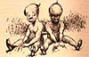

|
The following passages were quoted in at least one of the contemporary reviews of the novel. Using the links after each quotation, you can either go to the review in which the passage was quoted, or see the passage in the context of the chapter in which it originally appeared. |
You don't know me, without you have read a book by the name of "The Adventures of 'Tom Sawyer,' " but that ain't no matter. That book was made by Mr. Mark Twain, and he told the truth mainly. There were things which he stretched, but mainly he told the truth. That is nothing. I never seen anybody but lied, one time or another, without it was "Aunt Polly" or the widow, or maybe "Mary." "Aunt Polly"--Tom's "Aunt Polly," she is--and "Mary," and the "widow Douglas," is all told about in that book, which is mostly a true book; with stretchers, as I said before. |
| Review |  | MT's Text |
Now the way the book winds up is this: "Tom" and me found the money that the robbers hid in the cave, and it made us rich. We got $6,000 a piece--all gold. It was an awful sight of money when it was piled up. Well, "Judge Thatcher," he took it and put it out at interest, and it fetched us a dollar a day apiece all the year round--more than a body could tell what to do with. The "widow Douglas," she took me for her son, and allowed she would sivilize me; but it was rough living in the house all the time, considering how dismal, regular and decent the widow was in all her ways; and so, when I could stand it no longer, I lit out. I got into my old rags and my sugar hogshead again, and was free and satisfied. But "Tom Sawyer," he hunted me up and said he was going to start a band of robbers, and I might join if I would go back to the widow and be respectable. So I went back. |
| Review | MT's Text |
The stars were shining, and the leaves rustled in the woods ever so mournful; and I heard an owl, away off, who-whooing about somebody that was dead, and a whippowill and a dog crying about somebody that was going to die; and the wind was trying to whisper something to me, and I couldn't make out what it was, and so it made the cold shivers run over me. Then away out in the woods I heard that kind of a sound that a ghost makes when it wants to tell about something that's on its mind and can't make itself understood, and so can't rest easy in its grave, and has to go about that way every night grieving. I got so down-hearted and scared I did wish I had some company. Pretty soon a spider went crawling up my shoulder, and I flipped it off and it lit in the candle; and before I could budge it was all shriveled up. I didn't need anybody to tell me that that was an awful bad sign and would fetch me some bad luck, so I was scared and most shook the clothes off of me. I got up and turned around in my tracks three times and crossed my breast every time; and then I tied up a little lock of my hair with a thread to keep witches away. But I hadn't no confidence. You do that when you've lost a horseshoe that you've found, instead of nailing it up over the door, but I hadn't ever heard anybody say it was any way to keep off bad luck when you'd killed a spider. |
| Review | MT's Text |
He was most 50, and he looked it. His hair was long and tangled and greasy and hung down, and you could see his eyes shining through it like he was behind vines. It was all black, no gray; so was his long, mixed-up whiskers. There warn't no colorin his face, where his face showed--it was white; not like another man's white, but a white to make a body sick, a whote to make a body's flesh crawl--a tree-toad white, a fish-belly white. As for his clothes--just rags, that was all. |
| Review | MT's Text |
It would get so dark that it looked all blue-black outside, and lovely; and the rain would thrash along by so thick that the trees off a little ways looked dim and spider-webby; and here would come a blast of wind that would bend the trees down and turn up the pale under-side of the leaves; and then a perfect ripper of a gust would follow along and set the branches to tossing their arms as if they was just wild; and next, when it was just about the bluest and blackest -- fst! it was as bright as glory, and you'd have a little glimpse of tree-tops a-plunging about away off yonder in the storm, hundreds of yards further than you could see before; dark as sin again in a second, and now you'd hear the thunder let go with an awful crash, and then go rumbling, grumbling, tumbling, down the sky towards the under side of the world, like rolling empty barrels down stairs -- where it's long stairs and they bounce a good deal, you know. |
| Review | MT's Text |
"Don't you go about women in that old calico. You do a girl tolerable poor, but you might fool men, maybe. Bless you, child, when you set out to thread a needle, don't hold the thread still and fetch the needle up to it. Hold the needle still and poke the thread at it--that's the way a woman most always does, but a man always does 'tother way. And when you throw at a rat or anything hitch yourself up a-tiptoe and fetch your hand up over your head as awkward as you can, and miss your rat about six or seven foot. Throw stiff-armed from the shoulder, like there was a pivot there for it to turn on--like a girl; not from the wrist and elbow, with your arm out to one side, like a boy. And mind you, when a girl tries to catch anything in her lap she throws her knees apart; she don't clap them together the way you did when you catched the lump of lead. Why, I spotted you for a boy when you was threading the needle, and I contrived the other things just to make certain." |
| Review | MT's Text |
Every night, now I used to slip ashore, towards 10 o'clock, at some little village, and buy ten or fifteen cents' worth of meal, or bacon, or other stuff to eat, and sometimes I lifted a chicken that warn't roosting comfortable, and took him along. Pap always said, take a chicken when you get a chance, because if you don't want him yourself you can easy find somebody that does, and a good deed ain't ever forgot. I never see pap when he didn't want the chicken himself, but that is what he used to say, anyway. |
| Review | MT's Text |
| Review | MT's Text |
| Review | MT's Text |
Well, then, pretty soon all hands got to talking about the diseased again, and how good he was, and what a loss he was, and all that; and before long a big iron-jawed man worked himself in there from outside, and stood a-listening and looking, and not saying anything; and nobody saying anything to him either, because the king was talking and they was all busy listening. The king was saying -- in the middle of something he'd started in on -- |
| Review | MT's Text |
When the place was packed full the undertaker he slid around in his black gloves with his softy soothering ways, putting on the last touches, and getting people and things all ship-shape and comfortable, and making no more sound than a cat. He never spoke; he moved people around, he squeezed in late ones, he opened up passageways, and done it with nods, and signs with his hands. Then he took his place over against the wall. He was the softest, glidingest, stealthiest man I ever see; and there warn't no more smile to him than there is to a ham. |
| Review | MT's Text |
When I got there it was all still and Sunday-like, and hot and sunshiny -- the hands was gone to the fields; and there was them kind of faint dronings of bugs and flies in the air that makes it seem so lonesome and like everybody's dead and gone; and if a breeze fans along and quivers the leaves, it makes you feel mournful, because you feel like it's spirits whispering -- spirits that's been dead ever so many years -- and you always think they're talking about you. As a general thing it makes a body wish he was dead, too, and done with it all. |
| Review | MT's Text |
. . . you never see a cabin as blithesome as Jim's was when they'd all swarm out for music and go for him. Jim didn't like the spiders, and the spiders didn't like Jim; and so they'd lay for him, and make it mighty warm for him. And he said that between the rats and the snakes and the grindstone there warn't no room in bed for him, skasely; and when there was, a body couldn't sleep, it was so lively, and it was always lively, he said, because they never all slept at one time, but took turn about, so when the snakes was asleep the rats was on deck, and when the rats turned in the snakes come on watch, so he always had one gang under him, in his way, and t'other gang having a circus over him, and if he got up to hunt a new place the spiders would take a chance at him as he crossed over. He said if he ever got out this time he wouldn't ever be a prisoner again, not for a salary. |
| Review | MT's Text |